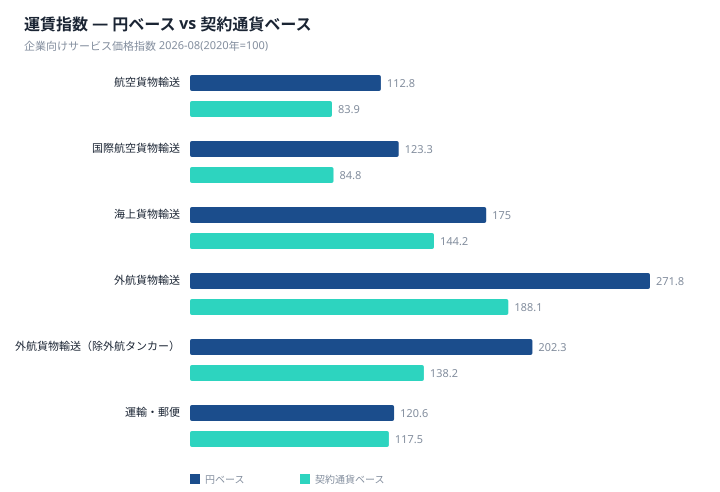
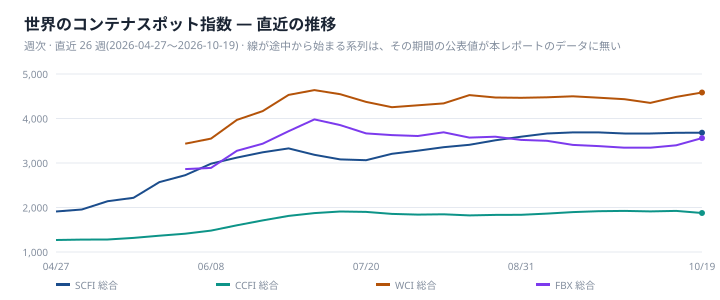
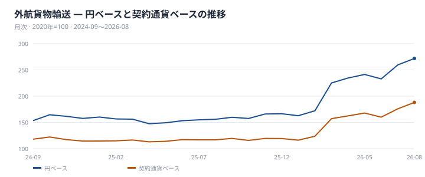
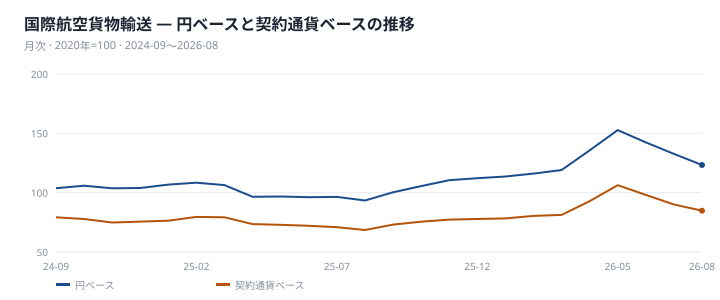
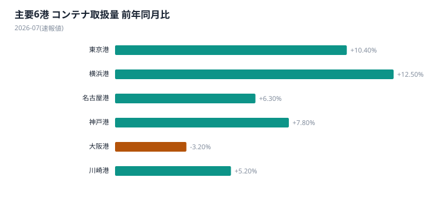
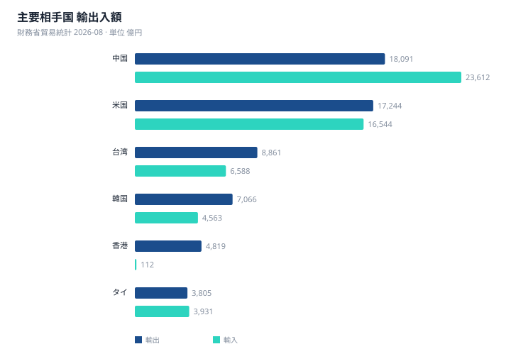

本号で扱う指標は基準月が揃っていない。世界のコンテナ船スポット運賃指数は2026年10月12日時点の週次値であるのに対し、日本の企業向けサービス価格指数(SPPI)は2026年8月分、港湾統計は2026年7月分、貿易統計は2026年8月分である。公表の遅れを踏まえたうえで、各軸の水準を並べる。世界のスポット市況は、SCFI総合3679.58(前週比+0.42%)、CCFI総合1922.64(+0.54%)、FBX総合3397.2(+1.59%)と、主要指数がそろって前週比プラスで推移している。
日本のSPPIで最も目を引くのは、外貨建て契約と円建て契約の系列で伸びが大きく分かれている点である。外航貨物輸送は円ベース271.8(前年同月比+74.2%)、契約通貨ベース188.1(同+60.9%)といずれも高い伸びを示す一方、国内航空貨物輸送は円ベース81.3(同▲5.0%)で前年を下回る。外航貨物輸送は外貨建て契約であるため為替換算の影響が円ベースの指数に反映されるが、国内航空貨物輸送は円建て契約であり、この影響を受けない。両者の差は、契約通貨の違いという構造によって説明できる。
為替の影響は水準そのものにも表れている。国際航空貨物輸送は契約通貨ベース84.8、親系列にあたる航空貨物輸送全体も契約通貨ベース83.9と、いずれも基準年(2020年=100)を下回ったままである。円ベースではそれぞれ123.3、112.8と基準年を上回っており、契約通貨ベースと円ベースの位置関係が逆転していることが分かる。運賃そのものは基準年の水準に届いていない中で、円ベースの指数だけが為替換算によって押し上げられて見えている。
港湾統計では、主要6港の外国貿易コンテナ取扱量が2026年7月の速報値で合計125万3777TEU、前年同月比+7.4%だった。内訳は輸出62万2691TEU、輸入63万1086TEUである。貿易統計では2026年8月の輸出額が10兆0433億円(前年同月比+19.3%)、輸入額が11兆1552億円(同+28.0%)で、貿易収支は▲1兆1119億円だった。輸出額は中国向け1兆8091億円が最も大きく、米国向け1兆7244億円が続く。なお、中国と欧州を結ぶユーラシア鉄道の運賃指数(ERAI)は2026年9月1日時点で総合3930(前月比+0.46%)であり、日本発着ではないもののアジア・欧州間の代替輸送ルートとして動向を併記しておく。
世界のスポット指数は10月12日時点まで上昇局面にあるが、日本のSPPIは8月分までの公表にとどまり、直近の動きは次回以降の公表で確認することになる。ただし転嫁の幅と時期は契約条件によって異なり、本レポートのデータからは特定できない。来月に向けては、世界のスポット指数が上昇を続けるかどうかと、次回公表される日本のSPPIで外航貨物輸送の契約通貨ベースがどちらに動くかを合わせて見る必要がある。

2026年10月12日時点のコンテナ船スポット運賃指数は、SCFI・CCFI・WCI・FBXの主要4系列がいずれも前週比プラスとなり、上昇で足並みがそろった。SCFI総合は3679.58(前週比+0.42%)、CCFI総合は1922.64(+0.54%)、FBX総合は3397.2(+1.59%)。4系列のうち上昇率が最も大きいのはWCI総合で、4485(+3.0%)だった。
上海発の個別航路運賃(10月5日時点)を見ると、上海→米東岸が10524で、上海→米西岸7584、上海→欧州2274を上回る水準にある。総合指数と個別航路運賃は基準日が異なり、総合指数は10月12日時点、個別航路運賃は10月5日時点の値である。
日本銀行の企業向けサービス価格指数(2026年8月分、2020年=100)では、海上貨物輸送が円ベース175.0、契約通貨ベース144.2。前年同月比は円ベースで+35.1%、契約通貨ベースで+25.2%となり、為替換算による上乗せ率は+8.0%である。このうち外航貨物輸送は円ベース271.8、契約通貨ベース188.1で、前年同月比は円ベース+74.2%、契約通貨ベース+60.9%、為替換算による上乗せ率は+8.3%だった。
外航貨物輸送のうち外航タンカーを除く系列は円ベース202.3、契約通貨ベース138.2。前年同月比は円ベース+27.0%、契約通貨ベース+18.2%で、為替換算による上乗せ率は+7.4%、基準年からの累積上乗せは+46.4%となっている。契約通貨ベースはいずれの系列も144.2・188.1・138.2と、基準年の水準である100を上回っている。円ベースの伸びが契約通貨ベースの伸びを上回る背景には為替換算の影響が反映されているが、運賃そのものの動きは契約通貨ベースに近い。
世界のスポット指数は10月12日時点まで公表されているのに対し、日本の外航運賃指数は2026年8月分までの公表であり、基準日は揃わない。直近のスポット上昇が日本の契約運賃にどう反映されるかは次回以降の公表で確認することになるが、転嫁の幅と時期は契約条件によって異なり、本データのみでは特定できない。
日本海事センターの航路別コンテナ荷動き(北米往航、2026年8月分)では、18カ国・地域合計が203万0486TEU(前年同月比+1.3%)。日本発は5万6086TEU(▲3.2%)で全体の2.8%を占める。同じ母集団の中で、中国発は100万6948TEU(+0.1%)、韓国発12万1015TEU(+8.0%)、台湾発5万0504TEU(▲8.5%)、ベトナム発33万0192TEU(+4.6%)と国によって方向が分かれた。
欧州往航(2026年7月分)はアジア合計が192万6947TEU(+9.6%)。地域別では中華地域が151万9910TEU(+10.2%)、東南アジアが26万3812TEU(+18.4%)と伸びた一方、北東アジア計は14万3225TEU(▲8.3%)にとどまった。欧州航路の公表は地域別までで、日本単独の数字はなく北東アジアに含まれる。この航路別荷動きは日本の港湾統計のTEUとは母集団が異なり、両者を合算することはできない。
供給面では、Drewryの欠航便数トラッカー(主要East-West航路、日本発着に限らない)の直近公表(2026年10月16日)で欠航44便、計画713便に対し欠航率6.2%。公表された直近6回を見ると、9月11日時点の79便(11.0%)から10月16日時点の44便(6.2%)へ低下しており、同時期にスポット運賃指数は上昇している。内航貨物輸送は円ベース139.1で前年同月比+7.7%(契約通貨ベースは公表されていない)。バルク市況のBDIは2991、燃料油はVLSFOが1001、HSFOが918(いずれも10月5日時点)だった。


国際航空貨物輸送の価格指数は円ベース123.3、契約通貨ベース84.8である。親系列にあたる航空貨物輸送全体も円ベース112.8、契約通貨ベース83.9であり、いずれも契約通貨ベースは基準年(2020年=100)を下回る水準にとどまる。円ベースは基準年を上回っているものの、運賃そのものの動きに近い契約通貨ベースは2020年の水準に届いていない。
前年同月比でみると、国際航空貨物輸送は円ベース+32.0%、契約通貨ベース+23.8%と、いずれも伸びは大きい。円ベース指数は契約通貨ベース指数を45.4%上回っており、前年同月比の伸びのうち為替換算による上乗せ率は+6.6%である。世界のコンテナ現物運賃はSCFI・CCFI・WCI・FBXの主要4指数中1指数のみ上昇と方向が割れているが、航空のスポット指数は本レポートのデータには無い。海運と航空は対象・算出主体が異なるため、別々の事実として扱う。
国内航空貨物輸送の円ベース指数は81.3で、基準年(2020年=100)を下回る。前年同月比は▲5.0%であり、円ベースで+32.0%だった国際航空貨物輸送とは方向がはっきり分かれた。国内航空貨物輸送は契約が国内取引であるため為替換算の影響を受けにくく、円ベースの下落幅はそのまま運賃水準の動きに近いとみることができる。
航空貨物輸送全体(円ベース112.8、契約通貨ベース83.9)は国際線の高い伸びと国内線の下落という、方向の異なる二つの内訳から成る。国内航空貨物輸送の契約通貨ベースの数値は公表されていない。

中国と欧州を結ぶユーラシア鉄道の運賃指数(ERAI)は、2026年9月1日時点で総合3930、前月比+0.46%だった。日本発着の航路ではないが、アジアと欧州を結ぶ代替輸送ルートとして参照する位置づけである。方向別では西航(中国→欧州)が4084で前月比+0.05%、東航(欧州→中国)は2601で前月比▲0.08%となり、東西で前月比の符号が分かれた。平均輸送日数は2026年10月1日時点で7日であり、運賃指数とは別の指標として示されている。ここでの変化率はいずれも前月比であり、前年同月比ではない点に注意が必要である。
日本銀行の企業向けサービス価格指数(2026年8月分)によると、陸上貨物輸送は円ベース113.2、前年同月比+4.2%だった。このうち道路貨物輸送は113.3(+4.3%)、鉄道貨物輸送は107.1(+0.6%)であり、道路貨物輸送が鉄道貨物輸送の水準を上回っている。いずれも基準年(2020年=100)を上回る水準にある。海上・航空のスポット運賃指数とは異なる国内サービス価格の系列であり、単月の指数として位置づけられる。
| 港湾 | 合計 (TEU) | 輸出 | 輸入 | 前年同月比 |
|---|---|---|---|---|
| 主要6港 合計 | 1,253,777 | 622,691 | 631,086 | +7.4% |
| 東京港 | 382,867 | 176,100 | 206,767 | +10.4% |
| 横浜港 | 257,629 | 135,912 | 121,717 | +12.5% |
| 名古屋港 | 237,430 | 124,194 | 113,236 | +6.3% |
| 神戸港 | 186,910 | 97,326 | 89,584 | +7.8% |
| 大阪港 | 181,197 | 85,276 | 95,921 | ▲3.2% |
| 川崎港 | 7,744 | 3,883 | 3,861 | +5.2% |
※ 2026-07 分(速報値 — 確報とは確定度が異なる)。外国貿易コンテナ。合計は主要6港の合計であり全国計ではない。出典: 国土交通省 港湾統計。
国土交通省港湾統計による主要6港の外国貿易コンテナ取扱量は、2026年7月分の速報値で合計125万3777TEU、前年同月比+7.4%だった。内訳は輸出62万2691TEU、輸入63万1086TEUで、いずれも増加基調にある。なお企業向けサービス価格指数と貿易統計が2026年8月分であるのに対し、港湾統計は2026年7月分の速報値であり、対象月が異なる点に留意する必要がある。この合計は主要6港の合計であって、全国計ではない。
港別では、6港のうち5港が前年同月比で増加し、大阪港のみ減少という結果になった。取扱量が最大の東京港は38万2867TEU(+10.4%)、次いで横浜港が25万7629TEU(+12.5%)と、主要6港の中で最も高い伸び率を示した。名古屋港は23万7430TEU(+6.3%)、神戸港は18万6910TEU(+7.8%)で、いずれも前年を上回る水準にある。一方、大阪港は18万1197TEU(▲3.2%)と唯一減少し、川崎港は7744TEU(+5.2%)と小規模ながら増加した。
日本銀行の企業向けサービス価格指数(2026年8月分)によると、港湾運送は105.1(前年同月比+0.8%)、倉庫は105.6(同+2.1%)で、いずれも運輸・郵便のうちの内訳系列である。水準・伸び率ともに倉庫が港湾運送を上回っており、両系列とも基準年(2020年=100)を上回る水準を維持している。港湾統計の物量(TEU)が2026年7月分の動きを示すのに対し、こちらの価格指数は2026年8月分であり、物量と価格は別の指標として捉える必要がある。

| 相手国 | 輸出 (億円) | 前年同月比 | 輸入 (億円) | 前年同月比 | 収支 (億円) |
|---|---|---|---|---|---|
| 総額 | 100,433 | +19.3% | 111,552 | +28.0% | ▲11,119 |
| 中国 | 18,091 | +20.5% | 23,612 | +22.5% | ▲5,521 |
| 米国 | 17,244 | +24.9% | 16,544 | +55.2% | 700 |
| 台湾 | 8,861 | +39.7% | 6,588 | +62.4% | 2,274 |
| 韓国 | 7,066 | +32.9% | 4,563 | +31.5% | 2,503 |
| 香港 | 4,819 | ▲12.6% | 112 | +31.6% | 4,707 |
| タイ | 3,805 | +14.0% | 3,931 | +34.1% | ▲126 |
| シンガポール | 2,792 | +20.0% | 1,034 | +29.3% | 1,758 |
| インド | 2,772 | +18.5% | 1,161 | +41.6% | 1,611 |
| ベトナム | 2,536 | +8.6% | 4,856 | +34.1% | ▲2,320 |
| マレーシア | 2,353 | +51.6% | 2,907 | +40.6% | ▲554 |
※ 2026-08 分。輸出上位10か国。地域集計は除く。出典: 財務省貿易統計。
| 輸出品目 | 金額 (億円) | 構成比 | 輸入品目 | 金額 (億円) | 構成比 |
|---|---|---|---|---|---|
| 機械類及び輸送用機器 | 55,902 | 55.7% | 機械類及び輸送用機器 | 35,328 | 31.7% |
| 特殊取扱品 | 11,956 | 11.9% | 鉱物性燃料 | 24,638 | 22.1% |
| 原料別製品 | 11,056 | 11.0% | 雑製品 | 12,412 | 11.1% |
| 化学製品 | 10,676 | 10.6% | 化学製品 | 11,169 | 10.0% |
| 雑製品 | 5,614 | 5.6% | 原料別製品 | 9,479 | 8.5% |
| 鉱物性燃料 | 2,281 | 2.3% | 食料品及び動物 | 7,576 | 6.8% |
| 原材料 | 1,689 | 1.7% | 原材料 | 7,347 | 6.6% |
| 食料品及び動物 | 993 | 1.0% | 特殊取扱品 | 2,339 | 2.1% |
| 飲料及びたばこ | 218 | 0.2% | 飲料及びたばこ | 982 | 0.9% |
| 動植物性油脂 | 48 | 0.0% | 動植物性油脂 | 281 | 0.3% |
※ 2026-08 分。概況品目の大分類10品目。出典: 財務省貿易統計 概況品別国別表。
2026年8月の貿易統計によると、輸出額は10兆0433億円(前年同月比+19.3%)、輸入額は11兆1552億円(同+28.0%)で、貿易収支は▲1兆1119億円だった。輸出額が最も大きいのは中国の1兆8091億円、次いで米国の1兆7244億円である。一方、伸び率で見ると、ファクトシートにある国のうちカナダが+59.0%と輸出の伸びが最も高く、マレーシアの+51.6%、台湾の+39.7%が続く。輸出額上位の中国・米国と、伸び率上位のカナダ・マレーシアは顔ぶれが一致しない。
輸入額は米国が1兆6544億円と中国の2兆3612億円に次ぐ規模で、伸び率では台湾が+62.4%、メキシコが+58.6%、カナダが+57.2%とファクトシートにある国の中で高い水準にある。国別収支を見ると、香港は輸出4819億円・輸入112億円で大幅な輸出超過となっており、輸出額そのものは前年同月比▲12.6%と減少している。対して豪州は輸出1884億円に対し輸入7035億円と輸入超過が際立つ。輸出超過国と輸入超過国は明確に分かれている。
輸出の品目別構成では「機械類及び輸送用機器」が55902億円で構成比55.7%と最大を占め、「特殊取扱品」11956億円(11.9%)、「原料別製品」11056億円(11.0%)、「化学製品」10676億円(10.6%)が続く。輸入でも「機械類及び輸送用機器」が35328億円で構成比31.7%と最大品目だが、輸出ほどの高さではない。輸入では「鉱物性燃料」が24638億円(22.1%)と2位につけており、輸出における同品目の構成比2.3%とは対照的な位置づけとなっている。
構成比が大きいことと、当該品目の伸びが大きいことは別のデータである。品目別の前年同月比はファクトシートにないため、構成比のみから伸びの寄与を語ることはできない。輸出入とも「雑製品」「化学製品」は上位に入るが、順位は入れ替わっており、品目構成の顔ぶれは輸出と輸入で異なる。

直近のスポット運賃の上昇は、日本の外航運賃・航空貨物輸送の価格指数がまだ公表されていない時期の動きである。両指数は2026年8月分までの公表であり、10月に観測された動きがどちらの方向で表れるかは次回以降の公表で確認することになる。ただし転嫁の幅と時期は契約条件によって異なり、データからは特定できない。
自社の契約で試算する — 本レポートは市場全体の指数を扱う。自社の契約時点と現在を入れて、値上げのうち運賃要因と為替要因を分けて出す道具を 物流費ベンチマーク に用意している。